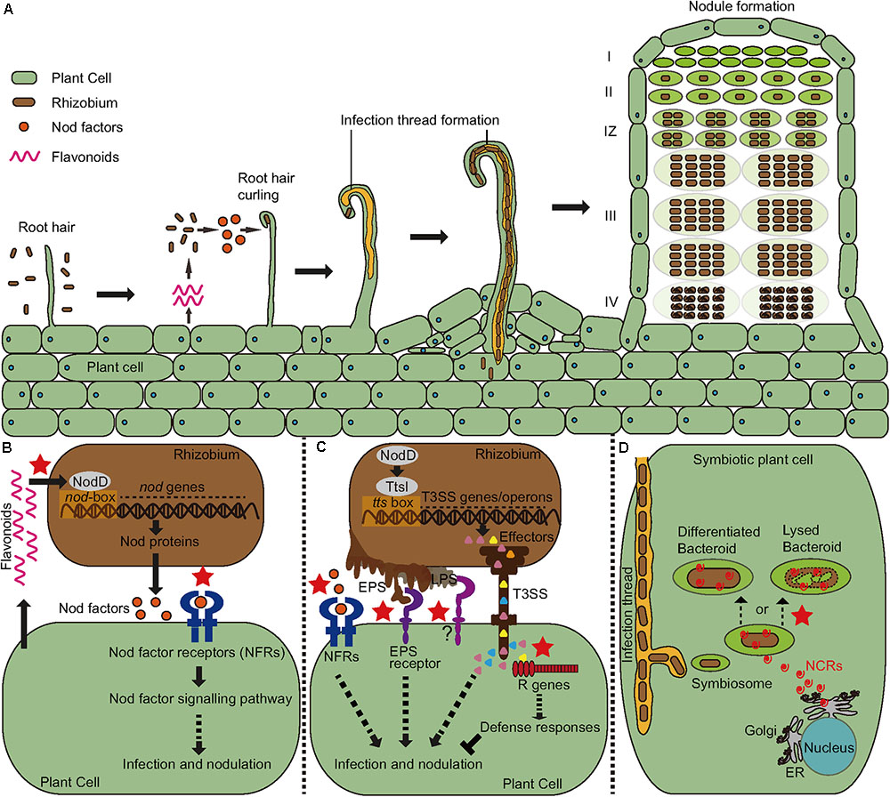
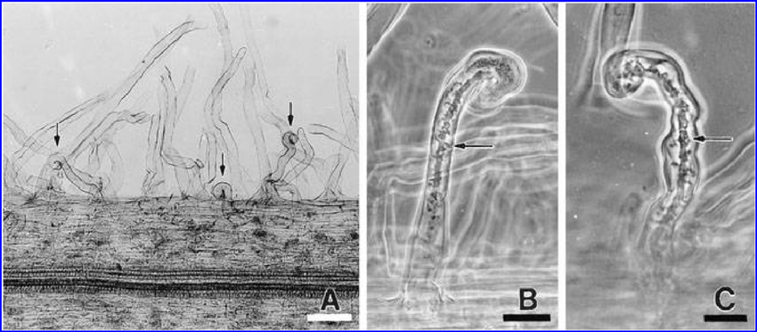
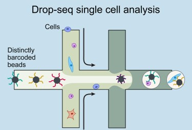
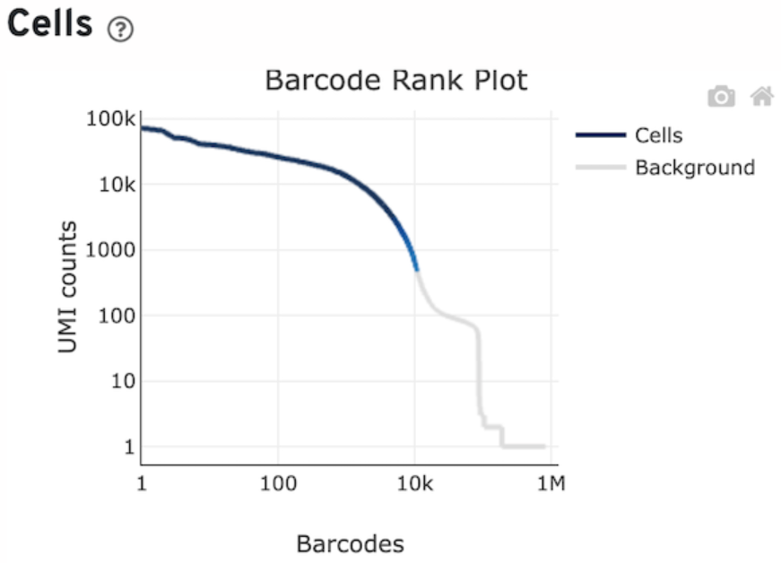
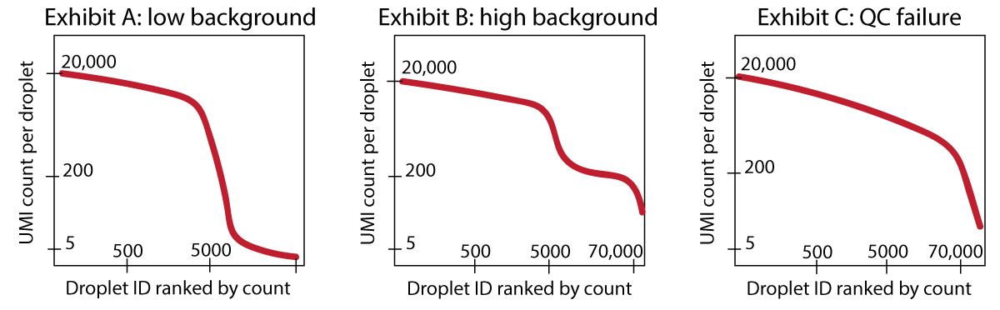
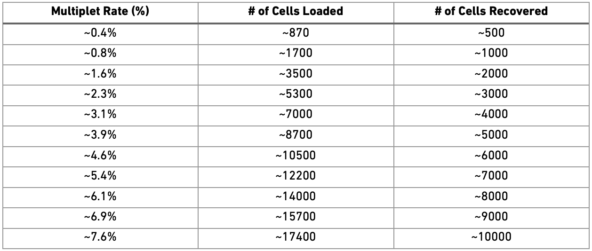
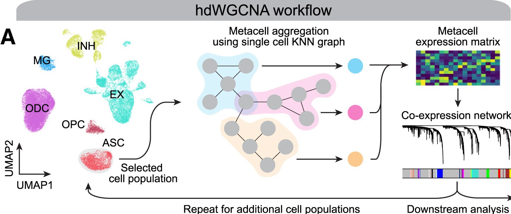

suppressPackageStartupMessages({
library(SeuratDisk);
library(Seurat);
library(DoubletFinder);
library(parallel);
library(multtest);
library(metap);
library(purrr);
library(dplyr);
library(stringr);
library(tibble);
library(ggplot2);
library(MAST);
library(WGCNA);
library(hdWGCNA);
library(patchwork);
library(doFuture);})Single Cell Analysis Tutorial
Samuele Soraggi ![]()
This tutorial will give you the extensive basic commands and explanations for the single cell analysis of your own dataset.
The first part of the tutorial (Section 2) is focused on preprocessing the data, which means primarily filtering and normalizing it.
The second part of the tutorial (Section 3) is focused on integrating all sixteen datasets produced from the lab sessions (you will perform this integration analysis in groups), identifying cell types and find a population of cells expressing the HAR1 gene to analyze different conditions of mutant VS wild type Lotus japonicus.
The third part of the tutorial (Section 4) applies tipycal gene analysis to detect genes conserved and differentially expressed between conditions
The fourth part of the tutorial (Section 4.2) pivots around the study of groups of genes co-expressed in the data and in specific clusters and conditions
The first two parts follow the phylosophy of the best practices explained in Luecken and Theis (2019) and Heumos et al. (2023). The third part applies standard statistical tests on the average gene expressions in subsets of the data. The last part is based pulling cells transcripts together with different granularities to improve the statistical power of calculations based on their gene expression (as in Morabito et al. (2023)).
The tutorial is based on four samples of Lotus Japonicus (two rhizobia-infected and two wild types) from Frank et al. (2023). The last section follows some of the tutorials from hdWGCNA.
A (rather very) short biological background
Lotus Japonicus is a legume characterized by the legume-rhizobium symbiotic interaction (rhizobia are soil microorganisms that can interact with leguminous plants to form root nodules within which conditions are favourable for bacterial nitrogen fixation. Legumes allow the development of very large rhizobial populations in the vicinity of their roots). Figure 1 and text below it from Wang, Liu, and Zhu (2018).

Rhizobial invasion of legumes is primarily mediated by a plant-made tubular invagination called an infection thread (IT). Research has shown that various genes are involved in some of the processes of the legume-rhizobia interaction. Figure 2 and text below it from Szczyglowski et al. (1998).

- RINRK1 (Rhizobial Infection Receptor-like Kinase1), that is induced by Nod factors (NFs) and is involved in IT formation but not nodule organogenesis. A paralog, RINRK2, plays a relatively minor role in infection. RINRK1 is required for full induction of early infection genes, including Nodule Inception (NIN), encoding an essential nodulation transcription factor. See Li et al. (2019).
- HAR1 mediates nitrate inhibition and autoregulation of nodulation. Autoregulation of nodulation involves root-to-shoot-to-root long-distance communication, and HAR1 functions in shoots. HAR1 is critical for the inhibition of nodulation at 10 mM nitrate. The nitrate-induced CLE-RS2 glycopeptide binds directly to the HAR1 receptor, this result suggests that CLE-RS2/HAR1 long-distance signaling plays an important role in the both nitrate inhibition and the autoregulation of nodulation. See Okamoto and Kawaguchi (2015).
- SYMRKL1, encodes a protein with an ectodomain predicted to be nearly identical to that of SYMRK and is required for normal infection thread formation. See Frank et al. (2023).
UMI-based single cell data from microdroplets
The dataset is based on a microdroplet-based method from 10X chromium. We remember that a microdroplet single cell sequencing protocol works as follow:
- each cell is isolated together with a barcode bead in a gel/oil droplet

- each transcript in the cell is captured via the bead and assigned a cell barcode and a transcript unique molecular identifier (UMI)
- 3’ reverse transcription of mRNA into cDNA is then performed in preparation to the PCR amplification
- the cDNA is amplified through PCR cycles

The raw data in practice
Let’s look at a specific read and its UMI and cell barcode. The data is organized in paired-end reads (written on fastq files), where the first fastq file contains reads in the following format
@SRR8363305.1 1 length=26
NTGAAGTGTTAAGACAAGCGTGAACT
+SRR8363305.1 1 length=26
#AAFFJJJJJJJJJJJJJJJJFJJJJHere, the first 16 characters NTGAAGTGTTAAGACA represent the cell barcode, while the last 10 characters AGCGTGAACT are the transcript UMI tag. The last line represents the quality scores of the 26 characters of barcode+UMI.
The associated second fastq file contains reads of 98nt as the following
@SRR8363305.1 1 length=98
NCTAAAGATCACACTAAGGCAACTCATGGAGGGGTCTTCAAAGA
CCTTGCAAGAAGTACTAACTATGGAGTATCGGCTAAGTCAANCN
TGTATGAGAT
+SRR8363305.1 1 length=98
#A<77AFJJFAAAJJJ7-7-<7FJ-7----<77--7FAAA--
<JFFF-7--7<<-F77---FF---7-7A-777777A-<
-7---#-#A-7-7--7--The 98nt-long string of characters in the second line is a partial sequence of the cDNA transcript. Specifically, the 10X chromium protocol used for sequencing the data is biased towards the 3’ end, because the sequencing is oriented from the 3’ to the 5’ end of the transcripts. The last line contains the corresponding quality scores.
Alignment and expression matrix
The data is aligned with cellranger, a completely automatized pipeline implemented by 10X for 10X-genomics data.
Apart from the data, the output contains an interactive document reporting the quality of the data and a small preliminary UMAP plot and clustering. In this report it is especially instructive to look at the knee plot.
The knee plot is created by plotting the number of unique molecular identifiers (UMIs) or reads against the number of cells sequenced, sorted in descending order. The UMIs or reads are a measure of the amount of RNA captured for each cell, and thus a measure of the quality of the data. The plot typically shows a steep slope at the beginning, followed by a plateau, and then a gradual decrese into a second slope and a final plateau.
- The steep slope represents the initial cells that are of high quality and have the highest number of UMIs or reads.
- The first plateau represents the cells that have lower quality data, and the gradual decrease represents the addition of droplets with even lower quality data.
- Usually, beyond the first slope, you have droplets that are either empty or of so poor quality, that they are not worth keeping for analysis.
- The height of the last plateau gives you an idea of the presence of ambient RNA inside droplets. If the last plateau is located high up, then the corresponding amount of UMIs consist of background ambient RNA which likely pollutes all cells in your data.
Below, the knee plot from the control 1 sample used in this analysis. You can see that around 10,000 cells with above ~1000 UMIs seems to be coinsidered of decent quality by cellranger (the part of line coloured in blue). Note that the last plateau is located at a very low amount of UMIs, meaning there is not really any relevant contamination from ambient RNA.

TipSomething more about knee plots
The background RNA (sequenced together with the transcript coming from the cell of interest) makes up the ambient plateau: the same background RNA is contained in empty droplets. If your dataset has extremely few UMI counts in empty droplets, then there is not much background RNA present - This is the best situation in which you can find yourself. See Exhibit A in Figure 6.
If you have a dataset where you can identify an empty droplet plateau by eye (Exhibit B in Figure 6), and these empty droplets have 50 or 100 or several hundred counts, then it can be advisable to use a specific software to remove the background transcripts (e.g. CellBender (Fleming et al. (2023)), SoupX (Young and Behjati (2020))).
If you have a dataset with so much background RNA that you cannot identify the empty droplet plateau yourself by eye (Exhibit C in Figure 6), then any software to remove background transcripts will also likely have a difficult time. Such the algorithms might be worth a try, but you should strongly consider re-running the experiment, as the knee plot points to a real QC failure

Preprocessing
NoteLearning outcome
We will answer to the following questions:
- How can I import single-cell data into R?
- How are different types of data/information (e.g. cell information, gene information, etc.) stored and manipulated?
- How can I obtain basic summary metrics for cells and genes and filter the data accordingly?
- How can I visually explore these metrics?
We start by loading all the packages necessary for the analysis and setup a few things
source("../Scripts/script.R")options(future.seed=TRUE)plan("multicore", workers = 8)
options(future.globals.maxSize = 8 * 1024^3)Download data
We check if the data exists, otherwise a script will download the missing data files in the appropriate folder, which should be ../Data.
downloadData()Import data
We import the data reading the matrix files aligned by 10X. Those are usually contained in a folder with a name of the type aligned_dataset/outs/filtered_bc_matrix, that 10X Cellranger creates automatically after the alignment. You need to use such a folder when your own data is aligned and you need to import it. In this tutorial, the aligned data is in the folder ../Data/control_1 used below. The command for reading the data is simply Read10X.
Control1 <- Read10X("../Data/control_1/")
WarningPreprocessing multiple datasets
Note that we are loading only one dataset (control_1, one of the two control replicates). Another control dataset, and two infected datasets, have already been preprocessed and will be used later - so we will now focus on the preprocessing of a single dataset. In general, when you have multiple datasets, you must preprocess them one at a time before integrating them together.
What we obtain in the command above is an expression matrix. Look at the first 10 rows and columns of the matrix (whose rows represent genes and columns droplets/cells) - the dots are zeros (they are not stored in the data, which has a compressed format called dgCMatrix), and are the majority of the expression values obtained in scRNA data!
Control1[1:10,1:10]What is the percentage of zeros in this matrix? You can see it for yourself below - it is a lot, but quite surprisingly we can get a lot of information from the data!
cat("Number of zeros: ")
zeros <- sum(Control1==0)
cat( zeros )cat("Number of expression entries: ")
total <- dim(Control1)[1] * dim(Control1)[2]
cat( total )cat("Percentage of zeros: ")
cat( zeros / total * 100 )Create a single cell object in Seurat
We use our count matrix to create a Seurat object. A Seurat object allows you to store the count matrix and future modifications of it (for example its normalized version), together with information regarding cells and genes (such as clusters of cell types) and their projections (such as PCA and tSNE). We will go through these elements, but first we create the object with CreateSeuratObject:
Control1_seurat <- CreateSeuratObject(counts = Control1,
project = "Control1_seurat",
min.cells = 3,
min.features = 200)The arguments of the command are * counts: the count matrix * project: a project name * min.cells: a minimum requirement for genes, in our case saying they must be expressed in at least 3 cells. If not, they are filtered out already now when creating the object. * min.features: a minimum requirement for cells. Cells having less than 200 expressed genes are removed from the beginning from the data.
Values for the minimum requirements chosen above are standard checks when running the analysis. Droplets not satisfying those requirements are of extremely bad quality and not worth carrying on during the analysis (remember the knee plot).
How many genes and cells have been filtered out?
cat("Starting Genes and Cells:\n")
cat( dim(Control1) )
cat("\nFiltered Genes and Cells:\n")
cat( dim(Control1) - dim(Control1_seurat) )
cat("\nRemaining Genes and Cells:\n")
cat( dim(Control1_seurat) )We want to use this data later in the analysis with other Control and Infected datasets. Therefore we add a Condition to the metadata table, and for this dataset we establish that each cell is Control.
Control1_seurat <- AddMetaData(object = Control1_seurat,
metadata = "Control",
col.name = "Condition")Content of a Seurat Object
What is contained in the Seurat object? We can use the command str to list the various slots of the object.
str(Control1_seurat, max.level = 2)The first slot is called assays, and it contains all the count matrices we have collected during our analysis when, for example, normalizing data or doing other transformations of it. Right now we only have the RNA assay with the raw counts:
Control1_seurat@assaysYou can always select which matrix is currently in use for the analysis by assigning it to DefaultAssay(). The default assay is often changed automatically by Seurat, for example the normalized assay is used as default after normalization is performed.
DefaultAssay(object = Control1_seurat) <- "RNA"cat("Your default assay is ")
cat(DefaultAssay(object = Control1_seurat))The second slot is the one that contains the metadata for each cell. It is easily visualized as a table (the command head shows only the first 6 rows of the table):
head( Control1_seurat@meta.data )The table contains a name for the dataset (orig.ident, useful to distinguish multiple datasets merged together), how many RNA transcripts are contained in each cell (nCount_RNA), the number of expressed genes in each cell (nFeature_RNA), and the Condition (added by us previously). More metadata can be added along the analysis, and some is added automatically by Seurat when running specific commands.
The assays and meta.data slots are the most relevant and useful to know - the other ones are mostly for internal use by Seurat and we do not go into detail with those.
Finding filtering criteria
We want to look in depth at which droplets do not contain good quality data, so that we can filter them out. The standard approach - which works quite well - is to study the distribution of various quality measures and remove doublets (droplets containing more than one cell) which can confound the analysis results. We will look at some plots and decide some threshold, then we will apply them at the end after looking at all the histograms.
Quality measure distributions
A first step is to calculate the percentage of mitochondrial and chloroplastic genes. A high percentage indicates the presence of spilled material from broken cells. We use the command PercentageFeatureSet and provide the pattern of the gene ID which corresponds to mitochondrial and ribosomal genes. The percentages are saved into the metadata simply by using the double squared brackets [[.
Control1_seurat[["percent.mt"]] <- PercentageFeatureSet(Control1_seurat,
pattern = "LotjaGiM1v")
Control1_seurat[["percent.chloroplast"]] <- PercentageFeatureSet(Control1_seurat,
pattern = "LotjaGiC1v")You can see the new metadata is now added for each cell
head( Control1_seurat@meta.data )Number of transcripts per cell
We plot a histogram of the number of transcripts per cell in Figure 7 below. On the right, we zoom into the histogram. We want to filter out the cells with the lowest number of transcripts - often there is a peak we can identify with a group of low-quality cells. Here we can choose to remove cells with less than ~700 transcripts (some people prefere to do a lighter filtering, and would for example set a threshold to a lower value). We remove also cells with too many transcripts that might contain some weird transcripts - which is also helpful for normalization because it removes some outlying values. For those we can set a limit to 30000, where there is a very thin tail in the histogram.
options(repr.plot.width=14, repr.plot.height=5)
plot1 <- ggplot(Control1_seurat@meta.data, aes(x=nCount_RNA)) +
geom_histogram(fill="#69b3a2", color="#e9ecef", alpha=0.9)
plot2 <- ggplot(Control1_seurat@meta.data, aes(x=nCount_RNA)) +
geom_histogram(fill="#69b3a2", color="#e9ecef", alpha=0.9) +
xlim(0,2000)
plot1 + plot2Number of detected genes per cell
Here we work similarly to filter out cells based on how many genes are detected (Figure 8). The right-side plot is a zoom into the histogram. It seems easy to set the thresholds at ~400 and ~7000 detected genes.
options(repr.plot.width=14, repr.plot.height=5)
plot1 <- ggplot(Control1_seurat@meta.data, aes(x=nFeature_RNA)) +
geom_histogram(fill="#69b3a2", color="#e9ecef", alpha=0.9)
plot2 <- ggplot(Control1_seurat@meta.data, aes(x=nFeature_RNA)) +
geom_histogram(fill="#69b3a2", color="#e9ecef", alpha=0.9) +
xlim(0,1000)
plot1 + plot2Mitochondrial and Chloroplast percentages
The percentages of mitochondrial and chloroplastic transcripts tells us the data is of good quality, since most cells have low values of those (Figure 9). Thresholds are usually set between 5% and 20% in single cell data analysis. In the paper, thresholds were for example set at 20%.
options(repr.plot.width=14, repr.plot.height=5)
plot1 <- ggplot(Control1_seurat@meta.data, aes(x=percent.mt)) +
geom_histogram(fill="#69b3a2", color="#e9ecef", alpha=0.9)
plot2 <- ggplot(Control1_seurat@meta.data, aes(x=percent.chloroplast)) +
geom_histogram(fill="#69b3a2", color="#e9ecef", alpha=0.9)
plot1 + plot2Counts-Features relationship
In Figure 10 below, we look at the plot of the number of transcripts per cell vs the number of detected genes per cell. Usually, those two measure grow simultaneously. At lower counts the relationship is quite linear, then becomes a curve, typically bending in favour of the number of transcripts per cell. You can see below that each dot (representing a droplet) is coloured by percentage of mitochondria. Droplets with a high percentage of mitochondrial genes also have very low amount of transcripts and detected genes, confirming that high mitochondrial content is a measure of low quality.
options(repr.plot.width=14, repr.plot.height=5)
meta <- Control1_seurat@meta.data %>% arrange(percent.mt)
plot1 <- ggplot( meta, aes(x=nCount_RNA, y=nFeature_RNA, colour=percent.mt)) +
geom_point(alpha=0.75, size=5)+
geom_smooth(se=TRUE, method="loess")
plot1In a similar way the chloroplastic genes confirm the pattern of low quality droplets.
options(repr.plot.width=14, repr.plot.height=5)
meta <- Control1_seurat@meta.data %>% arrange(percent.chloroplast)
plot1 <- ggplot( meta, aes(x=nCount_RNA, y=nFeature_RNA, colour=percent.chloroplast)) +
geom_point(alpha=0.75, size=5)+
geom_smooth(se=TRUE, method="loess")
plot1Filtering with the chosen criteria
Here we use the command subset and impose the criteria we chose above looking at the histograms. We set each criteria for keeping cells of good quality using the names of the features in metadata. We print those names to remember them.
cat("Meta data names:\n")
cat( names(Control1_seurat@meta.data), sep='; ' )The filtered object is called Control1_seurat_filt
Control1_seurat_filt <- subset(x = Control1_seurat,
subset = nCount_RNA > 700 &
nCount_RNA < 35000 &
nFeature_RNA > 400 &
nFeature_RNA < 7000 &
percent.mt < 5 &
percent.chloroplast < 5)
cat("Filtered Genes and Cells: ")
cat( dim(Control1_seurat) - dim(Control1_seurat_filt) )
cat("\nRemaining Genes and Cells: ")
cat( dim(Control1_seurat_filt) )Now the transcripts vs genes can be seen in Figure 12. The relationship is much more linear than previously after the removal of extreme values for transcripts and detected genes.
options(repr.plot.width=14, repr.plot.height=5)
meta <- Control1_seurat_filt@meta.data %>% arrange(percent.mt)
plot1 <- ggplot( meta, aes(x=nCount_RNA, y=nFeature_RNA, colour=percent.mt)) +
geom_point(alpha=0.75, size=5)+
geom_smooth(se=TRUE, method="loess")
plot1Normalization
scRNA-seq data is affected by highly variable RNA quantities and qualities across different cells. Furthermore, it is often subject to batch effects, sequencing depth differences, and other technical biases that can confound downstream analyses.
Normalization methods are used to adjust for these technical variations so that true biological differences between cells can be accurately identified.
Some commonly used normalization methods in scRNA-seq data include the following:
- Total count normalization: Normalizing the read counts to the total number of transcripts in each sample
- TPM (transcripts per million) normalization: Normalizing the read counts to the total number of transcripts in each sample, scaled to a million
- Library size normalization: Normalizing the read counts to the total number of reads or transcripts in each sample, adjusted for sequencing depth
All the above suffer from distorting some gene expressions, especially if the data varies a lot in term of sequencing depth. A new and more advanced method, at the moment the state-of-the-art, is SCTransform (Hafemeister and Satija (2019)), a software package that can correct for technical sources of variation and remove batch effects.
Finding technical sources of variation
Before normalizing we want to check for technical sources of variation in the data. One of those is the total number of transcripts: two similar cells might be sequenced at different depth. This influences of course normalization. The influence of the number of transcripts per cell is however always removed by SCtransform.
We want to look into other possible sources of variation. Those are usually quantities we calculate for each cell, for example the percentage of mitochondrial and chloroplastic genes.
To see if those quantities actually influence our data a lot, we check how much is their highest correlation with the first 10 components of the PCA of the dataset. In short, we see if any technical variation is such that it explains much of the variability of the data, covering possibly biological signal.
We now use the function plotCorrelations to plot the highest correlation of three quantities with the PCA: number of transcripts, percent of mitochondrial genes and percent of chloroplastic genes. You will see in Figure 13 how there is little correlation for the two percentages, for which we do not need to worry about, while there is correlation with the total number of transcripts per cell (this is always expected and, as mentioned before, is removed automatically by the normalization process). We created the function plotCorrelations specifically for the course, together with a few others, mostly for plotting or handling tables. You can find them in the file script.R.
plotCorrelations( object=Control1_seurat, measures=c('nCount_RNA', 'percent.mt', 'percent.chloroplast') )Executing normalization
We run SCtransform normalization below. Here you can choose to subsample some cells to do the normalization (ncells option): this is useful to avoid ending up waiting for a long time. A few thousands cells is enough.
You can also choose how many genes to consider for normalization (variable.features.n option): in this case it is best to use the genes that vary the most their expression across cells. We look at a histogram (Figure 14) of the variance of each gene to choose a threshold to identify highly-variable genes.
variance_genes <- apply( as.matrix(Control1_seurat_filt[['RNA']]@counts), 1, var)
options(repr.plot.width=14, repr.plot.height=5)
plot1 <- ggplot(data.frame(variance_genes), aes(variance_genes)) +
geom_histogram(fill="#69b3a2", color="#e9ecef", alpha=0.9) + xlim(0,1)
plot1hvighly_var_genes <- variance_genes > .25
cat("The total number of highly variable genes selected is: ")
cat(sum( hvighly_var_genes ))Control1_seurat_norm <- SCTransform(Control1_seurat_filt,
return.only.var.genes = FALSE,
ncells = 3000,
variable.features.n = sum( hvighly_var_genes ),
verbose = FALSE)Normalized data is now in the object Control1_seurat_norm, in a new assay called SCT. This assay is now the default used for data analysis: you can verify it very easily below:
cat("Your default assay is: ")
cat(DefaultAssay(object = Control1_seurat_norm))Visualizing the result
Now we plot the UMAP plot of the data to have a first impression of how the data is structured (presence of clusters, how many, etc.). First of all, we create a PCA plot, which tells us how many PCA components are of relevance with the elbow plot of Figure 15. In the elbow plot, we see the variability of each component in descending order. Note how, after a few rapidly descending components, there is an elbow. We schoose a threshold just after the elbow (for example at 15), which means those components will be used to calculate some other things of relevance in the data, such as distance between cells and the UMAP projection of Figure 16: specific commands using PCA allow to choose the components, and we will set 10 with the option dims = 1:15.
Control1_seurat_norm <- FindVariableFeatures(Control1_seurat_norm,
nfeatures = sum( hvighly_var_genes ))Control1_seurat_norm <- RunPCA(object = Control1_seurat_norm,
verbose = FALSE, seed.use = 123)ElbowPlot(Control1_seurat_norm, ndims = 30)We calculate the projection using the UMAP algorithm (McInnes et al. (2018), Becht et al. (2019)). The parameters a and b will change how stretched and scattered the data looks like. When you do your own UMAP projection, you can avoid setting a and b, and those will be chosen automatically by the command.
Control1_seurat_norm <- RunUMAP(object = Control1_seurat_norm,
a = .8, b=1,
dims = 1:15,
verbose = FALSE,
seed.use = 123)In Figure 16 we can see the resulting projection. The result looks pretty neat and structured (we can clearly see there are various clusters).
options(repr.plot.width=10, repr.plot.height=8)
UMAPPlot(object = Control1_seurat_norm)Removing doublets
Doublets removal is part of filtering, but it needs normalized data to work. This is why we do it after using SCtransform.
Doublets (and the very rare multiplets) refer to droplets that contain the transcriptional profiles of two or more distinct cells. Doublets can occur during the cell dissociation process or when two or more cells are captured in the same droplet during the library preparation step.
It is quite obvious that a doublet transcriptional profile can confound downstream analyses, such as cell clustering and differential gene expression analysis. Most doublet detectors, like DoubletFinder (McGinnis, Murrow, and Gartner (2019)) which we will use, simulates doublets and then finds cells in the data which are similar to the simulated doublets. Most such packages need an idea of the number/proportion of expected doublets in the dataset. As indicated from the Chromium user guide, expected doublet rates are about as follows:

The data we are using contained about 10000 cells per sample (as in the knee plot at the beginning), hence we can assume that it originates from around 18000 loaded cells and should have a doublet rate at about 7.6%.
Warning
Doublet prediction, like the rest of the filtering, should be run on each sample separately.
Here, we apply DoubletFinder to predict doublet cells. Most parameters are quite standard, we mostly need to choose nExp (expected number of doublets), PCs (number of principal components to use), sct (use the normalized data). The last three option are not part of the package, but have been added by creating a slightly modified version (here) - they allow to use multiple cores and a subset of cells for calculations for a considerable speedup. However, the code takes some time to run, so be patient. There will be a lot of printout as well, but don’t worry.
nExp <- round(ncol(Control1_seurat_norm) * 0.076) # expected doublet rateControl1_seurat_norm <- doubletFinder_v3(Control1_seurat_norm,
pN = 0.25, #proportion of doublets to simulate)
pK = 0.09,
nExp = nExp,
PCs = 1:15,
sct=TRUE,
workers=8,
future.globals.maxSize = 8*1024^13,
seurat.ncells=3000)We visualize the UMAP plot and which cells are estimated doublets in Figure 18. Fortunately, there are only a few potential doublets.
options(repr.plot.width=10, repr.plot.height=10)
DF.name = colnames(Control1_seurat_norm@meta.data)[grepl("DF.classification", colnames(Control1_seurat_norm@meta.data))]
DimPlot(Control1_seurat_norm, group.by = DF.name, pt.size = 2,
split.by = DF.name)Sometimes doublets have more detected genes than a single cell. In our case, some of the droplets have higher number of genes than the average (the red violin is large also above 3000 detected genes), so there is aclear sign of the presence of some doublets. Of course, as with any filtering, we might remove some actual cells. To be more effective in our filtering, we can select doublets with more than 2000 detected genes when we filter.
VlnPlot(Control1_seurat_norm, features = "nFeature_RNA", group.by = DF.name, pt.size = 0.1)Here we keep only singlets:
Control1_seurat_norm = Control1_seurat_norm[, (Control1_seurat_norm@meta.data[, DF.name] == "Singlet")&(Control1_seurat_norm@meta.data$nFeature_RNA>2000)]We save our data after all the filtering work!
SaveH5Seurat(object = Control1_seurat_norm,
filename = "control1.normalized.h5Seurat",
overwrite = TRUE,
verbose = FALSE)Integration
Integration of scRNA-seq data is useful to combine datasets from different experimental conditions (in our case the Control vs Infected) and sequencing runs, to gain a broader understanding of cellular processes. Integration is challenging due to technical variations and biological differences between the datasets (where we want to remove the formers to study correctly the latters).
Before integrating scRNA-seq datasets, we have applyed quality control and normalization to each sample to ensure consistency and accuracy of the data. Integration can happen using various methods (Adossa et al. (2021)). Seurat uses canonical correlation analysis (CCA) (Stuart et al. (2019), Xinming (2022)) to integrate scRNA-seq datasets from different experimental conditions. CCA identifies shared variation between two datasets while accounting for technical differences, such as batch effects.
The shared covariance patterns can represent biological signals that are common across the datasets, such as cell types or signaling pathways.
We load another control and two infected datasets. Those have been previously preprocessed, so you will not need to. Remember again: each dataset must be preprocessed separately before integration.
Control1_seurat_norm <- LoadH5Seurat("control1.normalized.h5Seurat", verbose = FALSE)Control2_seurat_norm <- LoadH5Seurat("../Data/control2.normalized.h5Seurat", verbose = FALSE)
Infected1_seurat_norm <- LoadH5Seurat("../Data/infected1.normalized.h5Seurat", verbose = FALSE)
Infected2_seurat_norm <- LoadH5Seurat("../Data/infected2.normalized.h5Seurat", verbose = FALSE)To integrate the datasets, we need to start creating a list with all datasets.
Gifu.list <- list(Control1_seurat_norm,
Control2_seurat_norm,
Infected1_seurat_norm,
Infected2_seurat_norm)We then start by normalizing each dataset of the list with SCtransform.
Gifu.list <- lapply(X = Gifu.list, FUN = function(x) {
message("Normalizing\n")
x <- SCTransform(x, ncells=3000, variable.features.n = 2000, return.only.var.genes = FALSE, verbose=FALSE)
})
Note
Running SCTransform as above does not contain any variable to regress out. By definition, the normalization will remove the technical effect of the number of transcripts per cell only. This is important because the amount of transcripts greatly vary in each cell, and it might seem a sign of biological variation, rather than a sign of varying capture efficiency of the mRNA transcripts. If you want to remove other sources of technical variation, for example chloroplastic and mitochondrial transcripts percentage, then you can use this command
x <- SCTransform(x, vars.to.regress = c("percent.mt", "percent.chloroplast"),
variable.features.n = 10000,
return.only.var.genes = FALSE,
verbose = TRUE)You can also include differences due to biological variation which you want to remove, to highlight the effect of other biological processes. Find the manual of SCTransform to understand all possible options of the command. This other tutorial has a good application of SCTransform which you can read.
Now we apply the CCA (Canonical Correlation Analysis) to put datasets together according to their similarities, while removing differences. The number of genes to use during integration is expressed below as nfeatures. The default choice is 2000 as written below.
Gifu.features <- SelectIntegrationFeatures(object.list = Gifu.list, nfeatures = 2000)
Gifu.list <- PrepSCTIntegration(object.list = Gifu.list, anchor.features = Gifu.features)Gifu.anchors <- FindIntegrationAnchors(object.list = Gifu.list, normalization.method = "SCT",
anchor.features = Gifu.features, reference = c(1,2))
seurat.integrated <- IntegrateData(anchorset = Gifu.anchors, normalization.method = "SCT")Now the default assay used for analysis has changed into integrated:
cat("The default assay of the data is now called: ")
cat(DefaultAssay(seurat.integrated))We need to recalculate PCA and UMAP to look at all datasets integrated together. We choose again 10 principal components from Figure 19. The newUMAP is in Figure 20.
seurat.integrated <- RunPCA(object = seurat.integrated, verbose = FALSE)ElbowPlot(seurat.integrated, ndims = 30)seurat.integrated <- FindNeighbors(object = seurat.integrated, dims = 1:20, k.param = 30)seurat.integrated <- RunUMAP(object = seurat.integrated, dims = 1:20, a=.8, b=.8)seurat.integrated <- SetIdent(seurat.integrated, value = "orig.ident")options(repr.plot.width=10, repr.plot.height=8)
DimPlot(object = seurat.integrated, reduction = "umap", label = T, repel = TRUE, pt.size = 0.5)We save our integrated data
SaveH5Seurat(object = seurat.integrated, filename = "seurat.integrated.h5Seurat", overwrite=TRUE)Clustering and cell type assignment
We perform clustering on the data using the leiden algorithm (blondel_fast_2008, Traag, Waltman, and Van Eck (2019)). Then, we look at a typical strategy of naming clusters by visualizing known markers. Since this is very subjective and biased, we then resort to naming cell types using a reference annotated dataset. An overview of cell type assignment procedures can be found at Cheng et al. (2023).
seurat.integrated <- LoadH5Seurat("seurat.integrated.h5Seurat", verbose=FALSE)Clustering function FindClusters. The resolution is used to change the number of clusters detected. We do not need many, so we set on to 0.5. Usual values range between 0.1 and 1.
seurat.integrated <- FindClusters(object = seurat.integrated,
resolution = .5,
random.seed = 123)The clusters are saved in the meta data table as integrated_snn_res.0.25. Note that the name changes with the resolution. Also observe how much metadata we have: many columns come from tools we have applied, such as doubletfinder (DF) and nearest neighbor distances (snn).
head( seurat.integrated@meta.data )We can plot the clusters in the UMAP plot
options(repr.plot.width=10, repr.plot.height=8)
DimPlot(object = seurat.integrated, reduction = "umap", label = T, repel = TRUE, pt.size = 0.5)Cluster assignment from visualized marker scores
Here, we look at how to assign names based on known markers. In this procedure, biological knowledge of the cell types is needed. Below, there is a list of known markers for each cell type, extracted from the supplementary data of Frank et al. (2023).
features_list <- list(
'Cortex_scoring' = c("LotjaGi1g1v0006200",
"LotjaGi1g1v0022100",
"LotjaGi1g1v0261700",
"LotjaGi1g1v0348000",
"LotjaGi2g1v0303000",
"LotjaGi3g1v0505900"),
'Epidermis_scoring' = c("LotjaGi1g1v0080000",
"LotjaGi1g1v0377600",
"LotjaGi1g1v0613100",
"LotjaGi3g1v0070500"),
'Endodermis_scoring' = c("LotjaGi1g1v0114400",
"LotjaGi1g1v0221300",
"LotjaGi1g1v0240900-LC",
"LotjaGi1g1v0707500"),
'RootCap_scoring' = c("LotjaGi1g1v0020900",
"LotjaGi1g1v0039700-LC",
"LotjaGi1g1v0040300",
"LotjaGi1g1v0147500"),
'Meristem_scoring'= c("LotjaGi4g1v0300900",
"LotjaGi6g1v0056500",
"LotjaGi1g1v0594200"),
'Phloem_scoring'= c("LotjaGi1g1v0028800",
"LotjaGi1g1v0085900",
"LotjaGi1g1v0119300",
"LotjaGi1g1v0149100"),
'QuiescentCenter_scoring' = c("LotjaGi1g1v0004300",
"LotjaGi1g1v0021400",
"LotjaGi1g1v0052700",
"LotjaGi1g1v0084000"),
'RootHair_scoring'= c("LotjaGi1g1v0014300",
"LotjaGi1g1v0109000",
"LotjaGi1g1v0109100",
"LLotjaGi1g1v0143900"),
'Pericycle_scoring'= c("LotjaGi3g1v0222100",
"LotjaGi3g1v0395900-LC",
"LotjaGi5g1v0166000-LC",
"LotjaGi3g1v0395500-LC",
"LotjaGi1g1v0783700-LC",
"LotjaGi2g1v0333200",
"LotjaGi4g1v0293000-LC"),
'Stele_scoring' = c("LotjaGi2g1v0126700",
"LotjaGi1g1v0558200",
"LotjaGi4g1v0215500",
"LotjaGi3g1v0174100",
"LotjaGi5g1v0288600",
"LotjaGi3g1v0129700"),
'Xylem_scoring' = c("LotjaGi1g1v0623100",
"LotjaGi1g1v0569300",
"LotjaGi1g1v0443000",
"LotjaGi1g1v0428800")
)Here, we need a function calculating the scores for each cell type. This is the average expression of the markers in the list, from which we remove the average expression of some control genes, which are supposed not to be specific for the cell type of interest. The cells matching the desired type should retain a high score.
seurat.clustered <- AddModuleScore(
object = seurat.integrated,
features = features_list,
ctrl = 5,
name = 'LJ_scores'
)We also apply a function (from script.R) to rename the scores in the metadata. Their names are not intuitive by default, they are all called with the name chosen above and a number after it:
names(seurat.clustered@meta.data)seurat.clustered <- renameScores(markers_list = features_list, seurat_data = seurat.clustered) Now we run the function plotScoresUMAP (from the file script.R). In Figure 22 we can see that some clusters are easy to classify (phloem and xylem), but many others are not. This is mainly due to the fact that the change of many cell types is a continuum, and this manual annotation is very subjective.
plotScoresUMAP(markers_list = features_list, seurat_data = seurat.clustered) One easy solution is to use the highest scoring of each cluster to assign the cluster name. Below, in the function clusterNames, for each cluster, we sum the scores of each cell type, and the highest value decides the cluster name.
#use the clustering above
Idents(seurat.clustered) <- 'integrated_snn_res.0.5'
#assign names
seurat.clustered@meta.data["Cell_types"] <- clusterNames(seurat.clustered, features_list)
#use the new names as clustering labels
Idents(seurat.clustered) <- 'Cell_types'
Note
Running SCTransform as above does not contain any variable to regress out. By definition, the normalization will remove the technical effect of the number of transcripts per cell only. This is important because the amount of transcripts greatly vary in each cell, and it might seem a sign of biological variation, rather than a sign of varying capture efficiency of the mRNA transcripts. If you want to remove other sources of technical variation, for example chloroplastic and mitochondrial transcripts percentage, then you can use this command
x <- SCTransform(x, vars.to.regress = c("percent.mt", "percent.chloroplast"),
variable.features.n = 10000,
return.only.var.genes = FALSE,
verbose = TRUE)You can also include differences due to biological variation which you want to remove, to highlight the effect of other biological processes. Find the manual of SCTransform to understand all possible options of the command. This other tutorial has a good application of SCTransform which you can read.
It seems from Figure 23 that we have quite consistent clustering across the various cell types.
options(repr.plot.width=10, repr.plot.height=10)
DimPlot(object = seurat.clustered, reduction = "umap", repel = TRUE, label=T, pt.size = 2, label.size = 5)Optional: assigning a mixed cluster
Consider the marker plots for pericycle and Stele cell types in Figure 22. Here you can see overlap of the markers, which is not unnormal, since biological processes often transition gradually and eventually share some markers. We can try to separate the two cell types more precisely by assigning the cell type to each single data point, by comparing its score for Pericycle and Stele, instead of renaming each cluster as a whole.
The code below runs such comparison for each cell in the pericycle and stele clusters.
peri <- seurat.clustered@meta.data$Pericycle_scoring[ seurat.clustered@meta.data$Cell_types == 'Pericycle' | seurat.clustered@meta.data$Cell_types == 'Stele']
stel <- seurat.clustered@meta.data$Stele_scoring[ seurat.clustered@meta.data$Cell_types == 'Pericycle' | seurat.clustered@meta.data$Cell_types == 'Stele' ]
peri_stele <- peri>=stel
finalcl = c()
for(i in peri_stele)
finalcl = c(finalcl, ifelse(i, "Pericycle", "Stele"))
celltypes <- seurat.clustered@meta.data$Cell_types
celltypes[ seurat.clustered@meta.data$Cell_types == 'Pericycle' | seurat.clustered@meta.data$Cell_types == 'Stele' ] <- finalcl
seurat.clustered@meta.data$Cell_types <- celltypes
Idents(seurat.clustered) <- 'Cell_types'options(repr.plot.width=10, repr.plot.height=10)
DimPlot(object = seurat.clustered, reduction = "umap", repel = TRUE, label=T, pt.size = 2, label.size = 5)Cluster assignment from an annotated dataset
We now use the annotated data from Frank et al. (2023) (which is the same we are using in the tutorial) to transfer data labels to our own processed data. More about label transfer can be read at Stuart et al. (2019). We load the data from the paper and define reference and query data.
seurat.reference <- readRDS("../Data/data_lavinia.RDS")seurat.query <- seurat.clusteredWe have to define the data integration between query and reference before we can transfer the cluster names. For the algorithm to work, we need to use the “RNA” assay, which contains raw expression values.
DefaultAssay(seurat.query) <- "RNA"lotusjaponicus.anchors <- FindTransferAnchors(reference = seurat.reference,
features = intersect( rownames(seurat.query),
rownames( seurat.reference[['SCT']]@scale.data ) ),
query = seurat.query, dims = 1:20,
reference.reduction = "pca",
reference.assay='RNA')Calculating the integration of the labels from the reference takes time. So we save the calculated anchors for the integration. If you need to rerun the code, skip the command above and instead load the data with readRDS below.
saveRDS(lotusjaponicus.anchors, file = "anchors.RDS")lotusjaponicus.anchors <- readRDS("anchors.RDS")Now it is finally time to transfer the labels and add them to the metadata. The column in the metadata is called by default predicted.id.
predictions <- TransferData(anchorset = lotusjaponicus.anchors,
refdata = Idents(seurat.reference),
dims = 1:20)seurat.clustered <- AddMetaData(seurat.clustered, metadata = predictions['predicted.id'])Just as a reminder of what is in the metadata, we can quickly look at the column names. Those are ordered by when we added things along the analysis. If you read the names, you can recognize part of the analysis steps until now.
names( seurat.clustered@meta.data )Here we define as clustering for the data and the plots, the one transfered just before. We then have a look at Figure 25 to observe that the labels look fine.
Idents(seurat.clustered) <- 'predicted.id'options(repr.plot.width=10, repr.plot.height=10)
DimPlot(object = seurat.clustered,
reduction = "umap",
repel = TRUE, label=T,
pt.size = 0.5, label.size = 10, )We save the data
SaveH5Seurat(object = seurat.clustered,
filename = "seurat.clustered.h5Seurat",
overwrite = TRUE,
verbose=FALSE)Gene Expression Analysis
In this section we explore the gene expression through
- determining differentially expressed genes for the infected condition against the control. Differentially expressed genes are significantly more epressed in one of the two groups used for the comparison. Usually the wild type is used as query for the comparison, such that differentially expressed genes are referred to the perturbated condition (infection, knock-out, illness, …)
- studying coexpression modules (a module is a group of gene similarly expressed across cells in the data) to find if
- any of them contains the gene of interest,
- they are significantly more expressed in specific cell groups (Differential module expression)
- if there are specific known functions associated to some modules
We will also use gene ontology terms for understanding the function of groups of genes.
Differential Gene Expression (DGE)
Here we test each cluster to see which are significantly more expressed genes in the infected samples compared to the wild-type samples. We also see if we find the gene RINRK1 as being significant. Again, the resulting genes can be useful to be integrated with the GO terms as we did before.
We first have a quick look to see how much the RINRK1 gene is expressed in the data. We use the RNA assay to plot the true expression values. The UMAP plot shows few cells expressing the genes, meaning its average expression is going to be very low, so it is likely we will not find the gene to be differentially expressed anywhere.
RINRK1.id <- 'LotjaGi1g1v0182900'
DefaultAssay(seurat.clustered) <- "RNA"
FeaturePlot(seurat.clustered,
reduction = "umap",
features = c(RINRK1.id),
order = TRUE,
min.cutoff = 0,
pt.size = 1,
label = TRUE,
label.size = 7) + theme(legend.position = "right")From biological knowledge, we expect the gene mostly expressed in the cortex and trichoblasts upon inoculation with rhizobia, and that is what happens in our data as well. We can see it in the code and violin plot of Figure 27
cat("Cells in inoculated L.J. expressing", RINRK1.id, "\n")
cat( sum( as.numeric(GetAssayData(seurat.clustered[RINRK1.id,]))>0 &
seurat.clustered@meta.data$Condition=="R7A" ) )
cat("\nCells in control L.J. expressing", RINRK1.id, "\n")
cat( sum( as.numeric(GetAssayData(seurat.clustered[RINRK1.id,]))>0 &
seurat.clustered@meta.data$Condition=="Control" ) )VlnPlot(seurat.clustered,
features = RINRK1.id)The code below uses FindMarkers to compare R7A condition against Control for each cluster, with a filter to remove non-singnificant genes (keeping p-value below 0.001 and log fold change > 1 and < -1). We keep also genes expressed 30% more than in the condition where they are underexpressed. We use only the 2000 most variable genes, since we are interested in very variable gene expressions across data.
seurat.clustered <- FindVariableFeatures(seurat.clustered, nfeatures = 2000, assay = "integrated")DEG_table <- FindMarkers(seurat.clustered,
assay='integrated',
ident.1 = "R7A",
ident.2 = "Control",
group.by = "Condition",
subset.ident="Cortex",
min.diff.pct = 0.3,
verbose = TRUE,
features = seurat.clustered@assays$integrated@var.features,
test.use = "wilcox") %>%
filter(p_val_adj <= 0.001 & abs(avg_log2FC)>1) %>%
select(-p_val)DefaultAssay(seurat.clustered) <- "integrated" #return to the integrated data
DEG <- data.frame()
cluster.names <- unique(Idents(seurat.clustered))
for(CLUSTER in cluster.names){
DEG_table <- FindMarkers(seurat.clustered,
assay='integrated',
ident.1 = "R7A",
ident.2 = "Control",
group.by = "Condition",
subset.ident=CLUSTER,
verbose = TRUE,
min.diff.pct = 0.3,
features = seurat.clustered@assays$integrated@var.features,
test.use = "wilcox") %>%
filter(p_val_adj <= 0.001 & abs(avg_log2FC)>1) %>%
select(-p_val)
if(dim(DEG_table)[1]>0){
DEG_table$'cluster' <- CLUSTER
DEG <- rbind(DEG, DEG_table)}
else{
message(paste0("---> Warning: No DE genes in cluster ", CLUSTER), appendLF=FALSE)}
message(paste0("Done with cluster ",CLUSTER), appendLF=FALSE)
}
DEG <- as.data.frame(DEG)
DEG$gene <- rownames(DEG)The table looks like this. Columns represent:
- average logfoldchange between R7A and Control
- percentage of cells in R7A expressing the gene
- percentage of cells in Control expressing the gene
- adjusted p-value
- cluster
- gene
There are some genes in the table
dim(DEG)[1]We now integrate GO terms using a table of predefined GO terms. The function doing that is addGOterms:
go_table <- read.table("../Data/LJ_GO_terms.gaf", skip=6, sep='\t', fill=TRUE, quote = "\"")DEG <- addGOterms(DEG, go_table, n.cores = 16)So we can see which GO terms are relevant in each cluster for the infected samples against the control:
DEG %>% filter(cluster=="Cortex" & GO!="Undefined")Finally, we do not expect to find the RINRK1 gene as differentially expressed, because its expression is on average too low.
DEG %>% filter(gene==RINRK1.id)We can save the table for future use. Such a table can be downloaded and open in any table processor (such as Excel).
write.csv(DEG_table, "DEG_table.csv")Coexpression analysis
We use the package hdWGCNA to detect groups of cells expressed simultaneously, and we find which modules are differentially expressed in specific clusters. We look at the GO terms to gain biological insight in the data.
Note
Before running hdWGCNA, we first have to set up the Seurat object. Most of the information computed by hdWGCNA will be stored in the Seurat object’s @misc slot.
Here we will set up the Seurat object using the SetupForWGCNA function, specifying the name of the hdWGNCA experiment. This function also selects the genes that will be used for WGCNA. The user can select genes using three different approaches using the posse gene_select parameter:
- variable: use the genes stored in the Seurat object’s VariableFeatures.
- fraction: use genes that are expressed in a certain fraction of cells for in the whole dataset or in each group of cells, specified by
group.by. - custom: use genes that are specified in a custom list.
In this example, we will select genes that are expressed in at least 5% of cells in this dataset, and we will name our hdWGCNA experiment “tutorial”.
seurat.clustered <- LoadH5Seurat("seurat.clustered.h5Seurat", verbose=FALSE)seurat.clustered <- SetupForWGCNA(
seurat.clustered,
gene_select = "variable",
fraction = 0.05, # fraction of cells that a gene needs to be expressed in order to be included
wgcna_name = "tutorial" # the name of the hdWGCNA experiment
)Construct metacells
After we have set up our Seurat object, the first step in running the hdWGCNA pipeline is to construct metacells from the single-cell dataset. Briefly, metacells are aggregates of small groups of similar cells originating from the same biological sample of origin.

{#fig-hdwgcna, width=800}
TipSomething more about hdWGCNA
The k-Nearest Neighbors (KNN) algorithm is used to identify groups of similar cells to aggregate, and then the average or summed expression of these cells is computed, thus yielding a metacell gene expression matrix (as if you had many bulk samples). The sparsity of the metacell expression matrix is considerably reduced when compared to the original expression matrix, and therefore it is preferable to use. We were originally motivated to use metacells in place of the original single cells because correlation network approaches such as WGCNA are sensitive to data sparsity.
hdWGCNA includes a function MetacellsByGroups to construct metacell expression matrices given a single-cell dataset. This function constructs a new Seurat object for the metacell dataset which is stored internally in the hdWGCNA experiment. The group.by parameter determines which groups metacells will be constructed in. We only want to construct metacells from cells that came from the same biological sample of origin, so it is critical to pass that information to hdWGCNA via the group.by parameter. Additionally, we usually construct metacells for each cell type separately. Thus, in this example, we are grouping by Sample and cell type to achieve the desired result.
The number of cells to be aggregated k should be tuned based on the size of the input dataset, in general a lower number for k can be used for small datasets. We generally use k values between 20 and 75. The dataset used for this tutorial has 21,369 cells, and here we use k=30. The amount of allowable overlap between metacells can be tuned using the max_shared argument. There should be a range of k values that are suitable for reducing the sparsity while retaining cellular heterogeneity for a given dataset, rather than a single optimal value.
Note: the authors of hdWGCNA have found that the metacell aggregation approach does not yield good results for extremely underrepresented cell types. For example, in this dataset, the Meristem and Xylem are the least represented, and will be excluded them from this analysis. MetacellsByGroups has a parameter min_cells to exclude groups that are smaller than a specified number of cells. Errors are likely to arise if the selected value for min_cells is too low.
Here we construct metacells and normalize the resulting expression matrix using the following code (read the additional text in the box above to understand the parameters). Note how the clusters Xylem and Quiescent center are removed, simply because they contain too few cells and cannot be used. So from now on we do not consider them for the coexpression analysis. Note that we use the scaled integrated data matrix (assay integrated and slot scale.data), so that we take advantage of the integration procedure we have been running before to unbias the data from technical features.
# construct metacells in each group
seurat.clustered <- MetacellsByGroups(
seurat_obj = seurat.clustered,
group.by = c("predicted.id", "Condition"), # specify metadata to split by cluster and condition
reduction = 'pca', # select the dimensionality reduction to perform KNN on
k = 30, # nearest-neighbors parameter
max_shared = 10, # maximum number of shared cells between two metacells
ident.group = 'predicted.id', # set the Idents of the metacell seurat object
assay = "integrated",
slot = "scale.data",
min_cells = 100,
wgcna_name = "tutorial",
verbose=TRUE
)The metacell matrix always needs to be normalized, which is immediately done below
#normalize metacell expression matrix:
seurat.clustered <- NormalizeMetacells(seurat.clustered)Here we specify the expression matrix that we will use for network analysis. It is natural to choose the integrated data matrix (which is chosen with the assay integrated and the matrix slot counts). We still need the data matrix after building the gene coexpression network when we want to evaluate the expression of each cell and gene in the original data.
seurat.clustered <- SetDatExpr(
seurat.clustered,
group_name = c('Pericycle','Cortex','Trichoblasts','Root tip',
'Phloem','Stele','Endodermis','Atrichoblasts',
'Meristem'), #all groups of interest in the data (we use all clusters)
group.by='predicted.id', # the metadata column containing the cell type info. This same column should have also been used in MetacellsByGroups
assay = 'integrated', # using integrated assay
slot = 'counts' # using count data
)Select soft-power threshold
Next we will select the soft power threshold. This is an extremely important step in the pipeline. hdWGCNA constructs a gene-gene correlation adjacency matrix to infer co-expression relationships between genes. The correlations are raised to a power to reduce the amount of noise present in the correlation matrix, thereby retaining the strong connections and removing the weak connections. Therefore, it is critical to determine a proper value for the soft power threshold.
We use the function TestSoftPowers to perform a parameter sweep for different soft power thresholds. This function helps us to guide our choice in a soft power threshold for constructing the co-expression network by inspecting the resulting network topology for different power values. The following code performs the parameter sweep and outputs a summary figure.
# Test different soft powers:
seurat.clustered <- TestSoftPowers(powers = 1:50,
seurat.clustered,
networkType = 'signed'
)
# plot the results:
plot_list <- PlotSoftPowers(seurat.clustered)
# assemble with patchwork
wrap_plots(plot_list, ncol=2)The general guidance for hdWGCNA is to pick the lowest soft power threshold that has Model Fit greater than or equal to 0.8. We will do it automatically, so you do not need to do it manually following the illustration fo Figure 28.
Construction of co-expression network
We now have everything that we need to construct our co-expression network. Here we use the hdWGCNA function ConstructNetwork. This function has quite a few parameters to play with if you are an advanced user (read this manual and the function ConstructNetwork is based on here), but we use default parameters that work well with many single-cell datasets.
The following code selects the power threshold from the values plotted in Figure 28 and constructs the co-expression network.
# automatic choice of soft power value
softPowerValue <- which(seurat.clustered@misc$tutorial$wgcna_powerTable$SFT.R.sq > .8)[1]
message(paste0("Chosen Soft Power Value: ",softPowerValue))
#multithreading for faster calculations
enableWGCNAThreads(nThreads = 8)
# construct co-expression network
seurat.clustered <- ConstructNetwork(na.rm=TRUE,
seurat.clustered,
soft_power=softPowerValue,
setDatExpr=FALSE,
tom_name = 'Network', # name of the topoligical overlap matrix written to disk
overwrite_tom = TRUE,
randomSeed = 123
)We can plot the network dendrogram in Figure 29. Each leaf on the dendrogram represents a single gene, and the color at the bottom indicates the co-expression module assignment. Clusters with similar brancing heights contain genes that are more similar to each other in terms of expression patterns when compared to genes in clusters with higher variation in merging heights.
Note
the “gray” module consists of genes that were not grouped into any co-expression module. The gray module is to be ignored for all downstream analysis and interpretation.
PlotDendrogram(seurat.clustered, main='Phloem hdWGCNA Dendrogram')Module Eigengenes (MEs)
We calculate harmonized module eigengenes. This is a way of doing PCA of the expression matrix of metacells including the genes of one coexpression module at a time. Thus we have a PCA of the data for each module. The first principal component of each PCA is called module eigengene: it is enough to distinguish one module from all the others and characterize the expression pattern of the module (Langfelder and Horvath (2007))!
Dimensionality reduction techniques are a very hot topic in single-cell genomics (Xiang et al. (2021)). It is well known that technical artifacts can muddy the analysis of single-cell datasets, and over the years there have been many methods that aim to reduce the effects of these artifacts. Therefore it stands to reason that MEs would be subject to these technical artifacts as well, and hdWGCNA seeks to alleviate these effects by using the integration software Harmony (Korsunsky et al. (2019)).
The following code performs the module eigengene computation harmonizing by the Sample of origin using the group.by.vars parameter. We need to run ScaleData to avoid errors from the harmony software.
# need to run ScaleData first or else harmony throws an error:
seurat.clustered <- ScaleData(seurat.clustered,
features=VariableFeatures(seurat.clustered),
verbose = FALSE)We still want to use the integrated data matrix to calculate the modules eigengenes, so we assign the scaled matrix to the counts slot, which is where hdWGCNA looks by default for computing module eigengenes.
seurat.clustered@assays$integrated@counts <- seurat.clustered@assays$integrated@scale.data# compute all MEs in the full single-cell dataset
seurat.clustered <- ModuleEigengenes(
seurat.clustered,
group.by.vars="orig.ident",
verbose = FALSE
)Compute module connectivity
In co-expression network analysis, we often want to focus on the hub genes, those which are highly connected within each module. Therefore we wish to determine the eigengene-based connectivity, also known as kME, of each gene. The ModuleConnectivity function computes the kMEs in the single-cell dataset (rather than the metacell dataset). This function essentially computes pairwise correlations between genes and module eigengenes. kME can be computed for all cells in the dataset, but it is recommended computing kMEs in the cell type(s) or group(s) previously used to run ConstructNetwork.
# compute eigengene-based connectivity (kME):
seurat.clustered <- ModuleConnectivity(
seurat.clustered,
group.by = 'predicted.id',
group_name = c('Pericycle','Cortex','Trichoblasts','Root tip',
'Phloem','Stele','Endodermis','Atrichoblasts',
'Meristem'),
)For convenience, we re-name the hdWGCNA modules to indicate such that they are not called cluster##, but Lotus-Mod## instead, which is a more meaningful name.
# rename the modules
seurat.clustered <- ResetModuleNames(
seurat.clustered,
new_name = "Lotus-Mod"
)We can visualize the genes in each module ranked by kME using the PlotKMEs function. Each plot shows the kME-score (which is at most 1) for a module. On the left side of the y axis you see the kME scores (how much a gene is well-correlated with others in the module). On the right side of the y axis you have a bar showing how many genes have the corresponding kME score. The x axis should show the number of genes corresponding to the bar (but no number is shown by this plotting function). What is important to observe is that only few genes have high kME score in each module, and those are the ones you want to focus on. The top ten names are plotted for each module as well.
options(repr.plot.width=20, repr.plot.height=25)
p <- capture.output({PlotKMEs(seurat.clustered, ncol=3, text_size = 4);})Getting the module assignment table
The plots of Figure 30 are a bit hard to read, though fancy to plot. hdWGCNA allows for easy access of the module assignment table using the GetModules function. This table consists of three columns: gene_name stores the gene’s symbol or ID, module stores the gene’s module assignment, and color stores a color mapping for each module (which is used in plotting steps). If ModuleConnectivity has been used on this hdWGCNA experiment, as it is our case, this table has additional columns with the connectivities plotted in Figure 30
# get the module assignment table:
modules <- GetModules(seurat.clustered)
# show the first 6 columns:
head(modules[,1:6])A table of the top N hub genes sorted by kME can be extracted using the GetHubGenes function. Here we choose the top 10 genes, but you can change the value if you want. The table contains all the top 10 genes for each module, the name of the module they come from and the kME score.
# get hub genes
hub_df <- GetHubGenes(seurat.clustered, n_hubs = 10)
# print the first lines of the table to see its structure
head( hub_df )Again, we can assign GO terms to better check associated functions
go_table <- read.table("../Data/LJ_GO_terms.gaf", skip=6, sep='\t', fill=TRUE, quote = "\"")hub_df <- addGOterms(input_table = hub_df,
go_table = go_table,
gene_column = 'gene_name',
n.cores = 16)Now it is easy to look at each module and relevant GO terms.
hub_filtered <- hub_df %>% filter(module == "Lotus-Mod3")hub_filteredWe save the table for later use
write.csv(hub_df, "top_genes_networks.csv")We can also plot the modules to see where they are most relevant on the UMAP plot. First we calculate the scores of each module and renames each module from Cluster## to Lotus-Mod##. The scores are the same for the markers plots for clustering, but calculated instead on the genes of each module.
features_list <- list()
for(MOD in hub_df$module){
genes <- hub_df %>% filter(module == MOD)
genes_mod <- genes$gene_name
features_list[[MOD]] <- genes_mod
}
seurat.clustered <- AddModuleScore(
object = seurat.clustered,
features = features_list,
ctrl = 5,
)
seurat.clustered <- renameScores(markers_list = features_list, seurat_data = seurat.clustered)
plotScoresUMAP(markers_list = features_list, seurat_data = seurat.clustered)
Tip
Plots can be hard to see when they are small. You can plot any module singularly. For example Mod1. You simply need to choose one of the elements from feature_list (below we chose feature_list[1] for Lotus-Mod1)
plotScoresUMAP(markers_list = features_list[1], seurat_data = seurat.clustered)We save the seurat object and the network separately (because for some inscrutable error, hdWGCNA cannot load together with the Seurat object when it is needed again).
SaveH5Seurat(seurat.clustered, 'seurat.network.h5Seurat', overwrite = TRUE, verbose=FALSE)saveRDS(seurat.clustered@misc, "network_lotus.RDS")Differential module Expression (DME) analysis
Lastly, we can see which modules are most expressed in a specific cluster against the others, in a similar way to differential gene expression.
seurat.network <- LoadH5Seurat('seurat.network.h5Seurat', misc=FALSE, verbose=FALSE)seurat.network@misc <- readRDS("network_lotus.RDS")Here we discuss how to perform DME testing between two different groups. We use the hdWGCNA function FindDMEs, which is similar to the Seurat function FindMarkers. We use the Mann-Whitney U test, also known as the Wilcoxon test, to compare two groups, but other tests can be used at the user’s discretion with the test.use parameter.
We are interested in defining our two groups both by condition. We filter DMEs by p-value and fold-change, so to remove non-significant ones from the list.
R7Agroup <- seurat.network@meta.data %>% subset(Condition == 'R7A') %>% rownames
WTgroup <- seurat.network@meta.data %>% subset(Condition == 'Control') %>% rownamesDMEs <- FindDMEs(
seurat.network,
barcodes1 = R7Agroup,
barcodes2 = WTgroup,
test.use='wilcox',
wgcna_name='tutorial'
) %>% filter(p_val_adj < 0.001 & abs(avg_log2FC)>1) %>% select(-p_val)The resulting table below is very similar to the one for differential gene expression. Now the p-values and fold changes are referred to the differential module expression in the inoculated VS the control cells. We can see there are some differences and one could study those modules in depth by looking at the top genes and their GO terms.
DMEsGraphically, you can always produce a lollipop plot as in Figure 31, where the size of each circle is the p-value, and the x-axis is the log-fold change. A cross on a circle means the p-value is not significant. In our case we filtered out p-values that were too high, so we have only significant modules in the plot.
options(repr.plot.width=6, repr.plot.height=6)
PlotDMEsLollipop(
seurat.network,
DMEs,
wgcna_name='tutorial',
pvalue = "p_val_adj",
)One-versus-all DME analysis
This is another case of DME analysis, where each cluster is tested against the rest of the data to see which modules are differentially expressed and are specific of each cell type. We can test by cell type (predicted.id) or by condition (Condition), or by any other label a dataset might have and that is contained in the meta data.
DMEs_all <- FindAllDMEs(
seurat.network,
group.by = 'predicted.id',
wgcna_name = 'tutorial'
) The table is usually big, but you can choose to filter by various parameters as below, and to look only at one cluster of interest
DMEs_cortex <- DMEs_all %>% filter(p_val_adj < .001 & abs(avg_log2FC)>1
& is.finite(avg_log2FC)
& group=='Cortex')The DME analysis results in a lot of significant results for the cortex. The most significant modules for a cluster are the ones where pct.1 and pct.2 are very different, and at the same time have a large fold-change and a small p-value. The column group tells you in which cluster the module is differentially overexpressed (positive fold-change avg_log2FC) or underexpressed (negative fold-change).
DMEs_cortexYou can look at any other cluster. For example trichoblasts. Here you can see how module 4 pops up as being basically entirely expressed only in Trichoblasts.
DMEs_tricho <- DMEs_all %>% filter(p_val_adj < .001 & abs(avg_log2FC)>1
& is.finite(avg_log2FC)
& group=='Trichoblasts')DMEs_trichoFor better visualization, you can always use the lolliplot plots using the correct table as an argument, so that you can plot multiple instances for the various clusters. In Figure 32 we plot boyh for cortex and trichoblasts from the tables determined in the code above.
options(repr.plot.width=12, repr.plot.height=6)
#lollipop with cortex table
p1 <- PlotDMEsLollipop(
seurat.network,
DMEs_cortex,
wgcna_name='tutorial',
pvalue = "p_val_adj",
)
#lollipop with trichoblasts table
p2 <- PlotDMEsLollipop(
seurat.network,
DMEs_tricho,
wgcna_name='tutorial',
pvalue = "p_val_adj",
)
#plot an add a title
p1 + ggtitle("DMEs of Cortex VS data") +
p2 + ggtitle("DMEs of Trichoblasts VS data")
NoteWrapping Up
This is the end of the tutorial. We have not shown much biological conclusion from the analysis - this is something that comes out by studying for example the GO terms of the various genes and modules identified. The scope of the tutorial was mainly to give all the means to perform your own analysis, from which you can then gain biological insight.
If you are interested in more resources to learn single cell analysis, you can find them at some of our courses. We have other single-cell analysis tutorials including different tools at
- Introduction to NGS data analysis (found in the
Genomics Sandboxat this link - note that this is in thepythonlanguage ) - Introduction to scRNAseq analysis in R (found in the
Transcriptomics Sandboxat this link )
You can also find a lot of material in the Seurat webpage. If you create a new notebook in this environment, you are likely to have all the packages needed to try the Seurat tutorials.
Bibliography
Adossa, Nigatu, Sofia Khan, Kalle T. Rytkönen, and Laura L. Elo. 2021. “Computational Strategies for Single-Cell Multi-Omics Integration.” Computational and Structural Biotechnology Journal 19: 2588–96. https://doi.org/10.1016/j.csbj.2021.04.060.
Becht, Etienne, Leland McInnes, John Healy, Charles-Antoine Dutertre, Immanuel W H Kwok, Lai Guan Ng, Florent Ginhoux, and Evan W Newell. 2019. “Dimensionality Reduction for Visualizing Single-Cell Data Using UMAP.” Nature Biotechnology 37 (1): 38–44. https://doi.org/10.1038/nbt.4314.
Cheng, Changde, Wenan Chen, Hongjian Jin, and Xiang Chen. 2023. “A Review of Single-Cell RNA-Seq Annotation, Integration, and Cell–Cell Communication.” Cells 12 (15): 1970. https://doi.org/10.3390/cells12151970.
Fleming, Stephen J., Mark D. Chaffin, Alessandro Arduini, Amer-Denis Akkad, Eric Banks, John C. Marioni, Anthony A. Philippakis, Patrick T. Ellinor, and Mehrtash Babadi. 2023. “Unsupervised Removal of Systematic Background Noise from Droplet-Based Single-Cell Experiments Using CellBender.” Nature Methods 20 (9): 1323–35. https://doi.org/10.1038/s41592-023-01943-7.
Frank, Manuel, Lavinia Ioana Fechete, Francesca Tedeschi, Marcin Nadzieja, Malita Malou Malekzadeh Nørgaard, Jesus Montiel, Kasper Røjkjær Andersen, Mikkel H. Schierup, Dugald Reid, and Stig Uggerhøj Andersen. 2023. “Single-Cell Analysis Identifies Genes Facilitating Rhizobium Infection in Lotus Japonicus.” Nature Communications 14 (November): 7171. https://doi.org/10.1038/s41467-023-42911-1.
Hafemeister, Christoph, and Rahul Satija. 2019. “Normalization and Variance Stabilization of Single-Cell RNA-Seq Data Using Regularized Negative Binomial Regression.” Genome Biology 20 (1): 296. https://doi.org/10.1186/s13059-019-1874-1.
Heumos, Lukas, Anna C. Schaar, Christopher Lance, Anastasia Litinetskaya, Felix Drost, Luke Zappia, Malte D. Lücken, et al. 2023. “Best Practices for Single-Cell Analysis Across Modalities.” Nature Reviews Genetics 24 (8): 550–72. https://doi.org/10.1038/s41576-023-00586-w.
Korsunsky, Ilya, Nghia Millard, Jean Fan, Kamil Slowikowski, Fan Zhang, Kevin Wei, Yuriy Baglaenko, Michael Brenner, Po-ru Loh, and Soumya Raychaudhuri. 2019. “Fast, Sensitive and Accurate Integration of Single-Cell Data with Harmony.” Nature Methods 16 (12): 1289–96. https://doi.org/10.1038/s41592-019-0619-0.
Langfelder, Peter, and Steve Horvath. 2007. “Eigengene Networks for Studying the Relationships Between Co-Expression Modules.” BMC Systems Biology 1 (1): 54. https://doi.org/10.1186/1752-0509-1-54.
Li, Xiaolin, Zhiqiong Zheng, Xiangxiao Kong, Ji Xu, Liping Qiu, Jongho Sun, Dugald Reid, et al. 2019. “Atypical Receptor Kinase RINRK1 Required for Rhizobial Infection but Not Nodule Development in Lotus Japonicus.” Plant Physiology 181 (2): 804–16. https://doi.org/10.1104/pp.19.00509.
Luecken, Malte D, and Fabian J Theis. 2019. “Current Best Practices in Single‐cell RNA‐seq Analysis: A Tutorial.” Molecular Systems Biology 15 (6): e8746. https://doi.org/10.15252/msb.20188746.
McGinnis, Christopher S., Lyndsay M. Murrow, and Zev J. Gartner. 2019. “DoubletFinder: Doublet Detection in Single-Cell RNA Sequencing Data Using Artificial Nearest Neighbors.” Cell Systems 8 (4): 329–337.e4. https://doi.org/10.1016/j.cels.2019.03.003.
McInnes, Leland, John Healy, Nathaniel Saul, and Lukas Großberger. 2018. “UMAP: Uniform Manifold Approximation and Projection.” Journal of Open Source Software 3 (29): 861. https://doi.org/10.21105/joss.00861.
Morabito, Samuel, Fairlie Reese, Negin Rahimzadeh, Emily Miyoshi, and Vivek Swarup. 2023. “hdWGCNA Identifies Co-Expression Networks in High-Dimensional Transcriptomics Data.” Cell Reports Methods 3 (6): 100498. https://doi.org/10.1016/j.crmeth.2023.100498.
Okamoto, Satoru, and Masayoshi Kawaguchi. 2015. “Shoot HAR1 Mediates Nitrate Inhibition of Nodulation in Lotus Japonicus.” Plant Signaling & Behavior 10 (5): e1000138. https://doi.org/10.1080/15592324.2014.1000138.
Stuart, Tim, Andrew Butler, Paul Hoffman, Christoph Hafemeister, Efthymia Papalexi, William M. Mauck, Yuhan Hao, Marlon Stoeckius, Peter Smibert, and Rahul Satija. 2019. “Comprehensive Integration of Single-Cell Data.” Cell 177 (7): 1888–1902.e21. https://doi.org/10.1016/j.cell.2019.05.031.
Szczyglowski, Krzysztof, Robert S. Shaw, Judith Wopereis, Sue Copeland, Dirk Hamburger, Beth Kasiborski, Frank B. Dazzo, and Frans J. De Bruijn. 1998. “Nodule Organogenesis and Symbiotic Mutants of the Model Legume Lotus Japonicus.” Molecular Plant-Microbe Interactions® 11 (7): 684–97. https://doi.org/10.1094/MPMI.1998.11.7.684.
Traag, V. A., L. Waltman, and N. J. Van Eck. 2019. “From Louvain to Leiden: Guaranteeing Well-Connected Communities.” Scientific Reports 9 (1): 5233. https://doi.org/10.1038/s41598-019-41695-z.
Wang, Qi, Jinge Liu, and Hongyan Zhu. 2018. “Genetic and Molecular Mechanisms Underlying Symbiotic Specificity in Legume-Rhizobium Interactions.” Frontiers in Plant Science 9. https://www.frontiersin.org/journals/plant-science/articles/10.3389/fpls.2018.00313.
Xiang, Ruizhi, Wencan Wang, Lei Yang, Shiyuan Wang, Chaohan Xu, and Xiaowen Chen. 2021. “A Comparison for Dimensionality Reduction Methods of Single-Cell RNA-Seq Data.” Frontiers in Genetics 12 (March): 646936. https://doi.org/10.3389/fgene.2021.646936.
Xinming, Tu. 2022. “Seurat CCA? It’s Just a Simple Extension of PCA!” https://xinmingtu.cn/blog/2022/CCA_dual_PCA/.
Young, Matthew D, and Sam Behjati. 2020. “SoupX Removes Ambient RNA Contamination from Droplet-Based Single-Cell RNA Sequencing Data.” GigaScience 9 (12): giaa151. https://doi.org/10.1093/gigascience/giaa151.